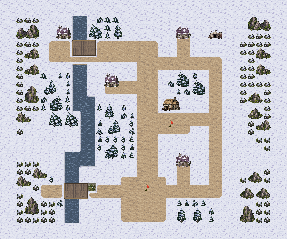
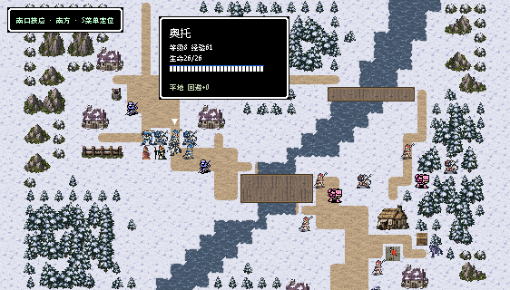
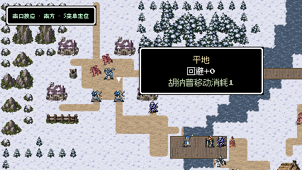
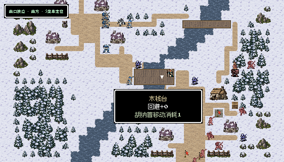
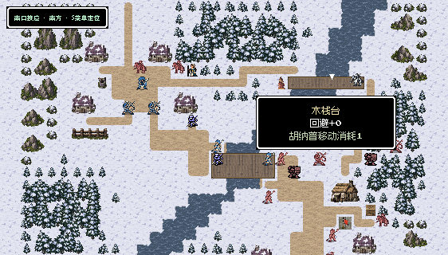
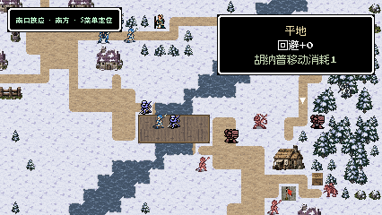
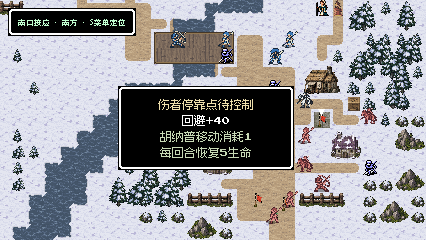
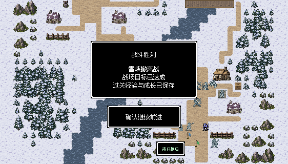
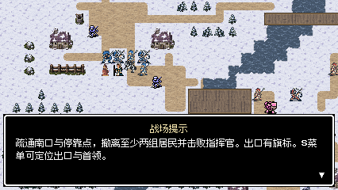

斜谷成为整体结构
河流从东北斜向西南，把村落与南口分成两岸。山肩、林冠和留白先形成大块轮廓，桥与道路随后接入。
西北村落出发，经中央谷桥到东岸医舍，再突破东南峡口。河谷决定两岸关系，建筑围出村街；主桥集中推进，林桥分兵绕行，北口追兵要求留下后卫。地图仍为32×26格。


两张均由游戏原生渲染器导出，32×26格，画面576×480像素；没有人物或路线覆盖。点击可看原图。
河流从东北斜向西南，把村落与南口分成两岸。山肩、林冠和留白先形成大块轮廓，桥与道路随后接入。
四座雪屋与水井形成紧凑村落，门前小径与主街连通。普通街巷收窄，桥头和医舍前才留出展开空间。
两格宽主桥允许集中突破；东北一格木桥通过较长林路抵达侧后。两线在医舍附近会合，保留林缘站位和雪地展开空间。
初始守军分为桥头、林路和南口三组；第4敌方回合的两名骑兵仍从北村方向追来。部署与居民站位随新构图调整。
默认纯场景；标注只用于本页说明，不加入游戏画面。
8/8正式队员存活且无人濒死 · 3/3居民存活
1,688次实际按键；战后进入H41并返回世界地图。查看记录
8/8正式队员存活且无人濒死 · 3/3居民存活
1,893次实际按键；战后进入H41并返回世界地图。查看记录
原胜利条件在至少两组居民撤离且其他目标完成后立即结算。以上两次均有三组居民存活，其中两组已经到达出口；不把“存活”写成“三组全部完成撤离”。回合数是这两次记录，不代表固定难度或严格的路线效率对照。








首版南村居民处于固定弓手开局射程内，已移到村屋侧面安全格；独立检查逐对验证三组居民与13名守军的开局射程。原失败记录保留。后卫配置从低速近战改为主角与弓手协同，最终两种策略均无正式队员濒死。
补齐村街与林路的T形接缝，加入克制的河岸雪檐；树林采用同一套原生树木形成连续林冠，未更改人物动画。214项规则、通行与保存检查通过，8张实机视口文字安全区检查无错误。
只改M41，其他39张地图逐文件核对保持一致。试玩使用真实开发记录正常返回整备后重新入场，所有移动、战斗和交互使用普通输入，没有改属性、随机结果或强制胜利。未重新安装手机包。